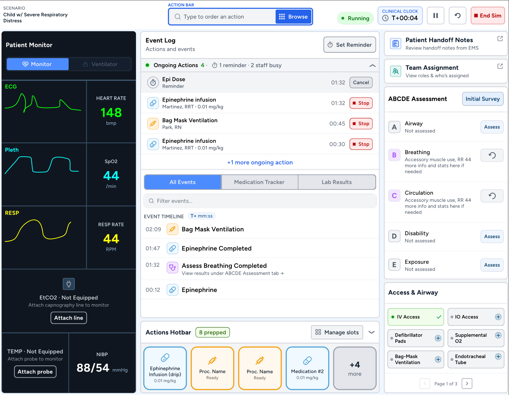
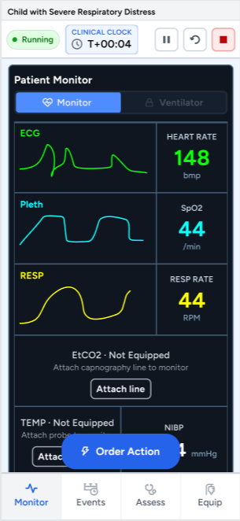
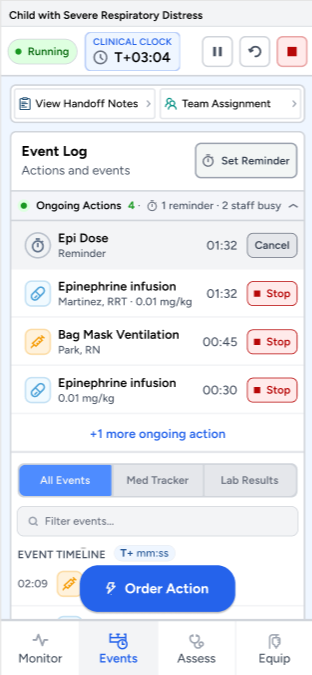
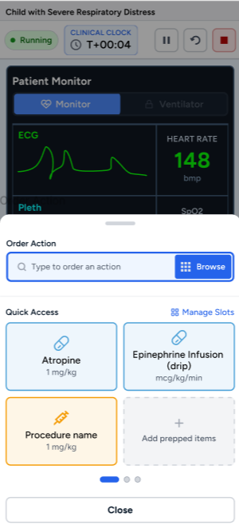
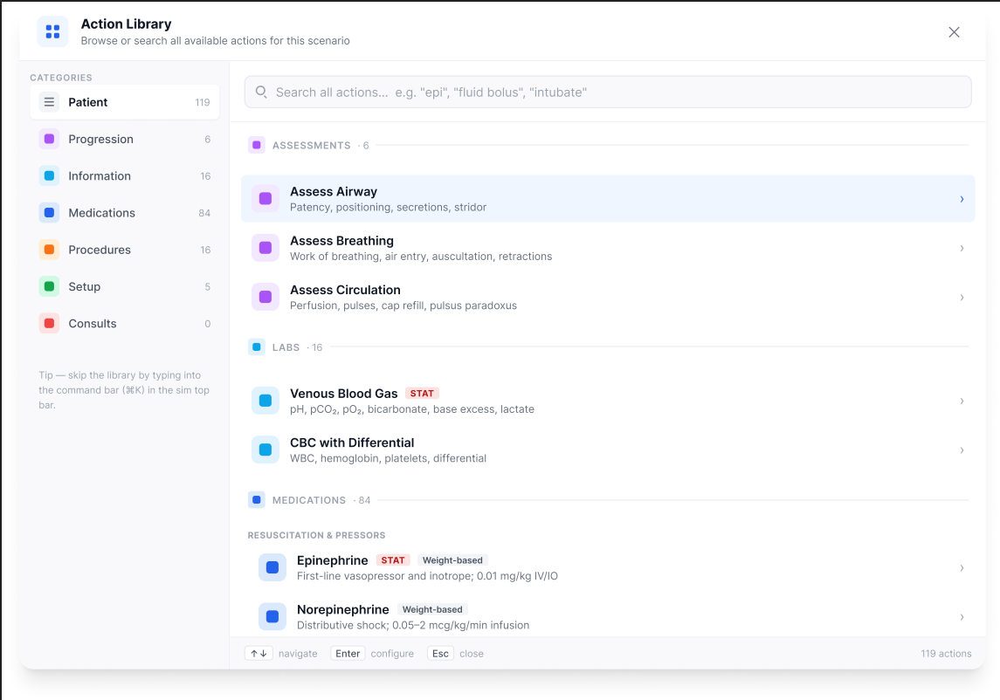
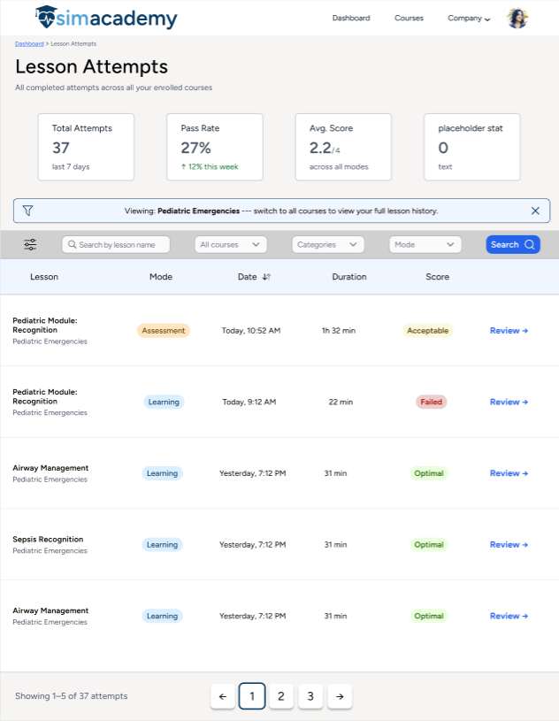
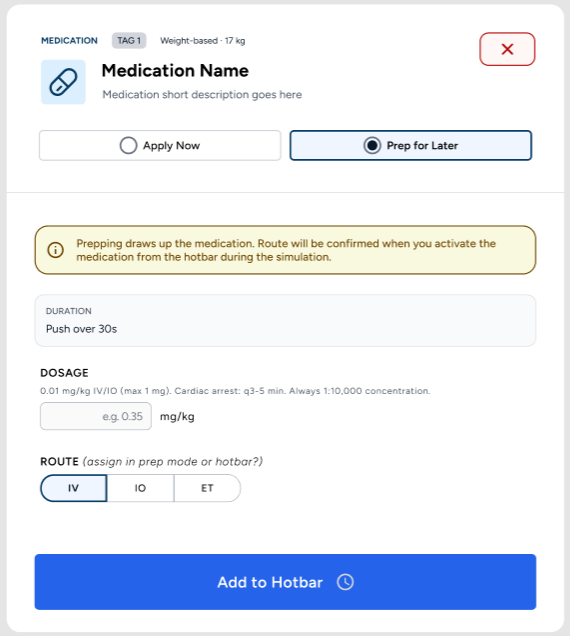

SimAcademy
Redesigning a clinical simulation platform to help medical students understand assignments, stay on track, and make confident decisions.
Project overview.
Role
UI/UX Design Intern
Timeline
May 2025–August 2025
Focus
Interface design, usability, and responsive layouts
The challenge.
Medical students needed a clearer way to understand simulation assignments, track their progress, and complete important actions without losing context.
Desktop experience.

Mobile experience.



Selected screens.



Outcome.
The redesigned experience organized complex medical simulation tasks into clearer workflows and made key information easier to find across desktop and mobile layouts.